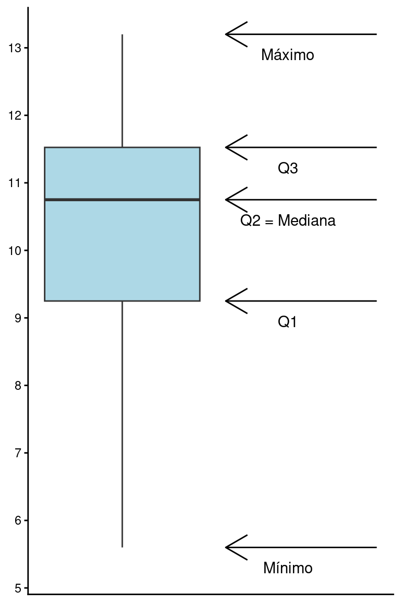
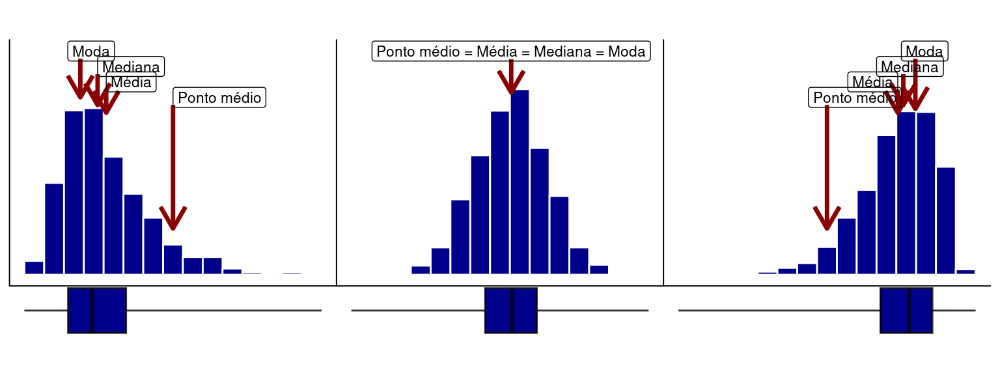

library(tidyverse)
library(gt)
library(patchwork)
source('scripts/assimetria-ggplot.r')Medidas de posição: quartis
R
Análise de dados
Estatística descritiva
Variabilidade de dados
Análise de dispersão
Cálculo e interpretação de quartis para análise de distribuição, ressaltando faixas de variação e valores atípicos.
Pacotes e funções utilizados
A média, mediana, moda e ponto médio são um tipo de medidas de posição que indicam uma posição particular, isto é, a posição central ao redor da qual os dados estão dispersos. Existem, no entanto, outras medidas de posição como quartis, comumente utilizadas na descrição, análise e interpretação de dados.
Os quartis de uma distribuição de valores são obtidos após ordenarmos os dados em ordem crescente e, em seguida, agrupá-los em partes iguais, contendo cada uma 25% do número total de observações. Se temos 20 observações, cada parte conterá, portanto, cinco observações, \(20 \times 0.25 = 5\). Os quartis são as posições numéricas que dividem estas partes.
Os quartis podem ser indicados por \(Q_1\), \(Q_2\) e \(Q_3\), conforme a figura abaixo.

Quartis
\(Q_{1}\): O ponto que separa os 25% menores valores do restante da distribuição.
\(Q_{2}\): O ponto que separa os 50% menores valores dos 50% maiores. Este coincide com a Mediana apresentada anteriormente.
\(Q_{3}\): O ponto que separa os 25% maiores valores do restante da distribuição.
Os quartis que veremos aqui são medidas empíricas dos limites indicados na figura acima. Calculamos estes limites a partir de uma amostra de tamanho \(n\).
1 Cálculo dos quartis na posição \(j\)
Existem diferentes algoritmos possíveis para o cálculo dos quartis. Veremos um deles. Para isso, siga os passos abaixo:
Reorganize \(X\) em ordem crescente de \(k = 1\) a \(k = n\). Seja \(n\) o número de observações em \(X\), teremos, portanto, \(X_k\) como o valor observado na posição \(k\) em ordem crescente. Deste modo, para \(k = 1\), teremos \(X_1\) como o menor valor, e para \(k = n\), teremos \(X_n\) como o maior valor.
Calcule
\[L = \frac{j \times (n+1)}{4};\]
Defina \(k\) como o maior número inteiro abaixo de \(L\);
Calcule
\[Q_j = X_k + (L - k) \times (X_{k+1}-X_k);\]
- \(Q_j\) será um elemento entre \(X_k\) e \(X_{k+1}\). Se \(X_k\) for um número inteiro, \(Q_j = X_k\).
Exemplo para o cálculo de \(Q_1\)
set.seed(1)
X <- round(rnorm(20, 10, 2), 1)
nX <- length(X)Considere a variável \(X\) com \(n =\) 20 observações.
\(X\) = 8.7, 10.4, 8.3, 13.2, 10.7, 8.4, 11, 11.5, 11.2, 9.4, 13, 10.8, 8.8, 5.6, 12.2, 9.9, 10, 11.9, 11.6, 11.2
sX <- sort(X)
j1 <- 1
L1 <- j1 * (nX + 1) / 4
k1 <- floor(L1)
Q1 <- sX[k1] + (L1 - k1) * (sX[k1+1] - sX[k1])
j2 <- 2
L2 <- j2 * (nX + 1) / 4
k2 <- floor(L2)
Q2 <- sX[k2] + (L2 - k2) * (sX[k2+1] - sX[k2])
j3 <- 3
L3 <- j3 * (nX + 1) / 4
k3 <- floor(L3)
Q3 <- sX[k3] + (L3 - k3) * (sX[k3+1] - sX[k3])- Organize em ordem crescente para determinar os valores de \(X\) nas posições \(k\).
Posicao_k <- paste(1:length(X), "a Posição", sep = "")
df <- tibble(`Posição k` = Posicao_k, `X ordenado` = sX)
df |>
gt()| Posição k | X ordenado |
|---|---|
| 1a Posição | 5.6 |
| 2a Posição | 8.3 |
| 3a Posição | 8.4 |
| 4a Posição | 8.7 |
| 5a Posição | 8.8 |
| 6a Posição | 9.4 |
| 7a Posição | 9.9 |
| 8a Posição | 10.0 |
| 9a Posição | 10.4 |
| 10a Posição | 10.7 |
| 11a Posição | 10.8 |
| 12a Posição | 11.0 |
| 13a Posição | 11.2 |
| 14a Posição | 11.2 |
| 15a Posição | 11.5 |
| 16a Posição | 11.6 |
| 17a Posição | 11.9 |
| 18a Posição | 12.2 |
| 19a Posição | 13.0 |
| 20a Posição | 13.2 |
- Para \(j = 1\) (\(Q_1\)), calcule:
\(L = \frac{1 \times (20+1)}{4} = 5.25\);
Defina \(k\) como o maior número inteiro abaixo de \(L\). Portanto, se \(L = 5.25\), \(k = 5\).
Note que a observação correspondente à \(k = 5\) (5\(^a\) posição) é 8.8, enquanto a observação correspondente à \(k = 6\) (6\(^a\) posição) é 9.4. Deste modo, calcule
\(Q_1 = 8.8 + (5.25 - 5) \times (9.4 - 8.8) = 8.95\).
Vemos então que, para a variável \(X\) em questão, o primeiro quartil é:
\(Q_1 = 8.95\)
Exercício: Calcule agora os valores correspondentes a \(Q_2\) e \(Q_3\) e verifique que os resultados são: \(Q_2 = 10.75\) e \(Q_3 = 11.575\).
2 Cálculo dos quartis no R
Podemos programar a sequência de funções acima utilizando o R:
X <- c(8.7, 10.4, 8.3, 13.2, 10.7, 8.4, 11, 11.5, 11.2, 9.4,
13, 10.8, 8.8, 5.6, 12.2, 9.9, 10, 11.9, 11.6, 11.2)
# Ordenando X em ordem crescente
sX <- sort(X, decreasing = FALSE)
# Encontrando o número de observações em X
n <- length(X)
# Encontrando os quartis (Q1, Q2 e Q3)
j <- c(1, 2, 3)
L <- j * (n + 1) / 4
k <- floor(L)
Q <- sX[k] + (L - k) * (sX[k+1] - sX[k])
names(Q) <- c('Q1', 'Q2', 'Q3')
# Visualizando os quartis
Q Q1 Q2 Q3
8.950 10.750 11.575 Entretanto, existe uma função no R denominada quantile, que pode ser utilizada da seguinte forma:
quantile(X, probs = c(0.25, 0.50, 0.75)) 25% 50% 75%
9.250 10.750 11.525
Observações
Lembre que o quartil \(Q_1\) delimita a posição \(25\%\), \(Q_2\) delimita a posição \(50\%\) (\(=\) mediana) e \(Q_3\) delimita a posição \(75\%\). Por este motivo, utilizamos o argumento
probs = c(0.25, 0.50, 0.75). Assim, a funçãoquantileé mais geral que a rotina passada anteriormente, pois permite o cálculo para qualquer posição entre os quantis \(0\%\) e \(100\%\).Note também que os resultados foram ligeiramente diferentes, uma vez que existem diferentes algoritmos para o cálculo dos quartis. A função
quantilepermite a escolha entre \(9\) algoritmos diferentes e, por padrão, utiliza otype = 7. O passo-a-passo que mostramos corresponde aotype = 6. Você pode verificar que, ao digitar o comando abaixo, os resultados serão os mesmos que calculamos manualmente.
quantile(X, probs = c(0.25, 0.50, 0.75), type = 6) 25% 50% 75%
8.950 10.750 11.575 Essas diferenças diminuem à medida que o tamanho amostral aumenta.
Finalmente, os quartis discutidos aqui são casos particulares de limites mais gerais denominados quantis, que indicam uma posição específica na distribuição. Por exemplo, o limite \(Q_1\) poderia ser chamado de Quantil \(0,25\). Assim, podemos encontrar qualquer posição, como o quantil \(0,10\) que delimita os \(10\%\) menores valores.
No cálculo dos quantis para um limite \(p\) qualquer (\(0 \le p \le 1\)), a única mudança no algoritmo apresentado está na obtenção de \(L\) (passo 2), que é feita como:
\[L = p \times (n+1)\]
3 Obtendo os quartis a partir de uma tabela de dados
Importe a base de dados Reservatorios_Parana_parcial.csv.
res <- read_delim(
file = "https://raw.githubusercontent.com/FCopf/datasets/refs/heads/main/Reservatorios_Parana_parcial.csv",
delim = ",",
locale = locale(decimal_mark = ".", encoding = "latin1")
)Usaremos a função summarise para obter os quartis para a variável CPUE.
res |>
reframe(Quartis = quantile(CPUE, probs = c(0.25, 0.50, 0.75)),
Limites = c('25%', '50%', '75%')) |>
gt()| Quartis | Limites |
|---|---|
| 7.43 | 25% |
| 11.74 | 50% |
| 16.30 | 75% |
4 Boxplots: uma representação gráfica dos quartis
Os quartis de uma distribuição nos ajudam a entender o formato de uma distribuição. Uma das formas amplamente estabelecidas de representá-los graficamente é por meio de um boxplot. Para a variável acima, o boxplot será:
Código
df <- data.frame(X)
PX <- quantile(X, probs = c(0, 0.25, 0.50, 0.75, 1))
LegX <- c("Mínimo", "Q1", "Q2 = Mediana", "Q3", "Máximo")
ggplot(df, aes(y = X)) +
geom_boxplot(fill = 'lightblue', coef = 10) +
annotate(geom = 'text', x = .8, y = PX - 0.3,
label = LegX) +
annotate(geom = 'segment',
x = 0.5, xend = 1.23,
y = PX, yend = PX,
arrow = arrow(ends = 'first')) +
scale_y_continuous(breaks = 5:14) +
theme_classic() +
theme(axis.title = element_blank(),
axis.text.x = element_blank(),
axis.ticks.x = element_blank())

Em um boxplot, a linha central representa a Mediana ou \(2^o\) quartil (\(Q_2\)), e os limites da caixa são o \(1^o\) e \(3^o\) quartis, respectivamente \(Q_1\) e \(Q_3\). As extremidades geralmente são os pontos máximo e mínimo da distribuição.
Existe uma relação entre os histogramas e os boxplots. Ambos podem ser utilizados para avaliar o grau de assimetria de uma distribuição, como apresentado abaixo. Em uma distribuição simétrica, a caixa do boxplot tende a se concentrar no meio da distribuição. Já em distribuições assimétricas, a caixa tende a ficar deslocada à esquerda ou à direita (Figura 3).
Código
# Ver função completa no arquivo 'scripts/assimetria-ggplot.r'
assimetria_ggplot(fig = 'bh')
